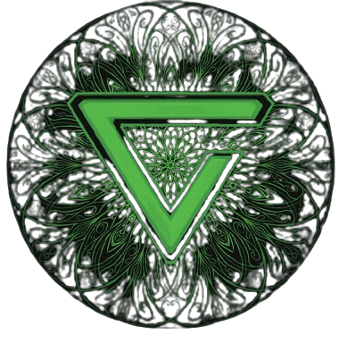

Знак Аард (ориг. Aard, со Старшей речи ard — верх, верхний, высочайший) — ведьмачий знак, простейшая магия, доступная ведьмакам и основанная на элементе воздуха. Аард считается одним из наиболее часто используемых и полезных знаков. Это заряд телекинетической энергии, который может оглушить противника, сбить его с ног или разоружить, отразить удар или разрушить преграду. Для применения Аарда, как и других знаков, достаточно минимальных магических способностей, концентрации воли и особого жеста.
«Ведьмак сложил пальцы в Знак Аард. Грохнуло так, что у Геральта заложило уши, а от поднявшегося ветра зашумели ивы»
— Описание Знака в «Гвинте»
 Знак Аксий (ориг. Aksji) — ведьмачий знак, простейшая магия, доступная ведьмакам и основанная на элементе воды. Знак Аксий полезен ведьмакам как в диалогах, так и в бою. Он обладает достаточно мощным психотропным внушающим эффектом. Действует фактически на всех существ, кроме тех, что обладают сильной волей. Позволяет как легко убедить собеседника, так и привлечь на свою сторону противника – с временным эффектом.
«Геральт, охватив шею Плотвы левой рукой, правую сложил в Знак Аксий и водил ею над головой лошади, шепча заклинания»
— Описание Знака в «Гвинте»
Игни (ориг. Znak Igni) — ведьмачий знак, простейшая магия, доступная ведьмакам и основанная на элементе огня. Этот Знак создает изливающуюся прямо из пальцев ведьмака волну или струю пламени. Для применения Игни, как и других знаков, достаточно минимальных магических способностей, концентрации воли и особого жеста. Имеет обширное применение – от пыток и использования в бою до разжигания костров.
«Многие пренебрегали ведьмачьими Знаками. Почувствовав на своей шкуре мощь Игни, они быстро меняли свое мнение»
— Описание Знака в «Гвинте»
Знак Ирден (ориг. Znak Yrden) — ведьмачий знак, простейшая магия, доступная ведьмакам и основанная на смешанном элементе. Ирден создает поле мощного магического притяжения, парализуя и обездвиживая цель. Является весьма мощным Знаком, но чем больше масса тела существа, тем быстрее он вырывается из Знака. При должных тренировках Знак Ирден также способен вызывать парализующую боль и даже ослеплять существо, попавшее в ловушку.
«Он лег навзничь рядом с мумифицированными останками Адды, на плите изнутри начертил знак Ирден»
— Описание Знака в «Гвинте»
Знак Квен (ориг. Znak Quen) — ведьмачий знак, простейшая магия, доступная ведьмакам и основанная на элементе земли. Этот Знак зачастую является спасением для ведьмаков, поскольку создает магический заслон, щит, поглощающий большую часть наносимого урона, а при должном таланте еще и наносящий урон атакующим противникам. Тем не менее, ведьмака, находящегося под куполом Квена, могут сбить с ног, оглушить или нанести иной урон.
«Геральт, чувствуя во рту железный привкус крови, выкинул вперед руку с пальцами, растопыренными в форме Знака Квен, и выкрикнул заклинание»
— Описание Знака в «Гвинте»